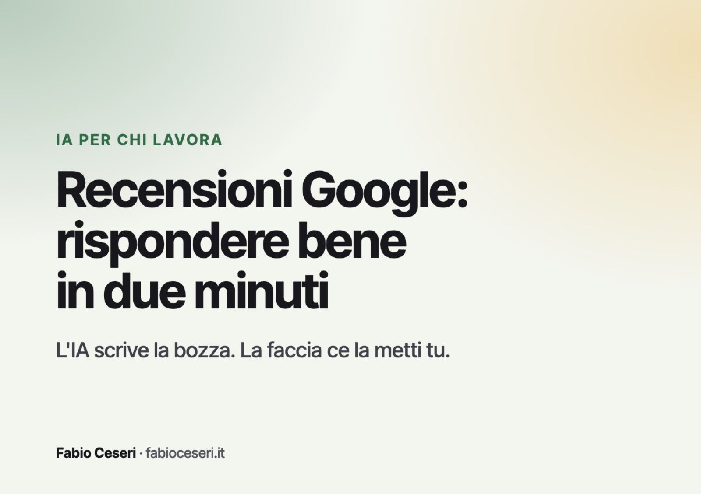

Recensioni Google: come rispondere bene in due minuti con l'intelligenza artificiale
Il metodo in tre passi, con la richiesta pronta da copiare: l'IA scrive la bozza, la faccia ce la metti tu.

Una recensione su Google resta lì per anni. La risposta del titolare pure. Chi cerca dove cenare o dove dormire guarda prima le stelle, poi scorre e legge come risponde chi manda avanti il locale.
Tanti titolari non rispondono mai. Non per maleducazione: manca il tempo, e davanti a una stroncatura manca anche la calma. Proprio qui l'intelligenza artificiale dà una mano concreta, gratis, a patto di usarla nel modo giusto.
Il metodo in tre passi
1. Copia la recensione, da Google Maps o dal profilo della tua attività.
2. Incollala in un assistente gratuito, come ChatGPT, Claude o Gemini, insieme a questa richiesta: «Sono il titolare di [attività]. Rispondi a questa recensione: tono cordiale, tre frasi, ringrazia per [un dettaglio], niente frasi fatte.»
3. Rileggi e aggiungi una cosa vera: il nome del cliente, il piatto che ha ordinato, la camera dove ha dormito. Poi pubblica.
Due minuti, non di più.
Perché l'ultimo passo vale più degli altri
L'IA scrive in un italiano pulito, però non sa che quella sera il forno era rotto, né che la signora della recensione viene a pranzo da te ogni domenica. Senza un particolare vero la risposta sembra una lettera della banca. Con il particolare giusto diventa una stretta di mano.
Quando arriva la stroncatura
Alla richiesta aggiungi una riga: «Togli la rabbia, lascia i fatti.» Se c'è da scusarsi, ci si scusa. Se invece il cliente ha torto, glielo dici con garbo e lo inviti a parlarne di persona, al telefono o al bancone.
Mai litigare in pubblico. Chi legge non conosce la storia, vede soltanto il tono, e di solito si schiera con chi resta calmo.
Due avvertenze
Nella richiesta metti solo quello che è già scritto nella recensione: niente numeri di telefono, niente dati della prenotazione.
La risposta, poi, non va mai pubblicata così come esce. Leggerla ad alta voce prima del clic costa dieci secondi e risparmia parecchie figuracce.
Come lavoro io
Con i miei siti sul Mugello faccio lo stesso ogni giorno: la macchina prepara, io controllo, correggo e firmo. L'IA scrive la bozza, la faccia ce la metti tu.
Se hai un'attività in Mugello e vuoi provarci, in un'ora ti faccio vedere come si fa sul tuo profilo. Trovi tutto su https://fabioceseri.it/#servizi oppure mi chiami al 339 376 7210.
E tu, alle recensioni rispondi sempre o lasci correre?